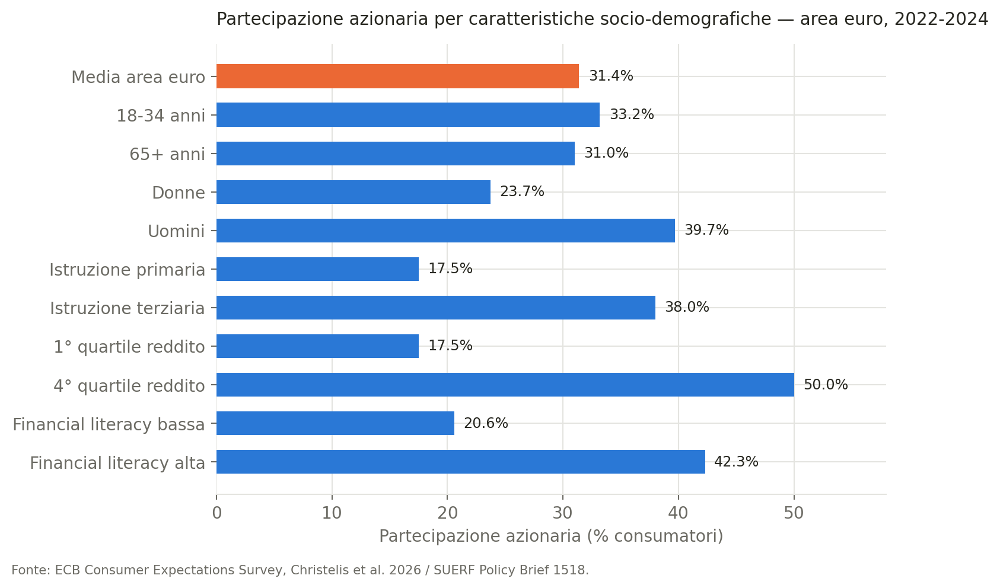
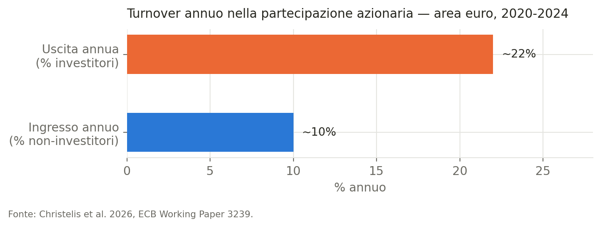
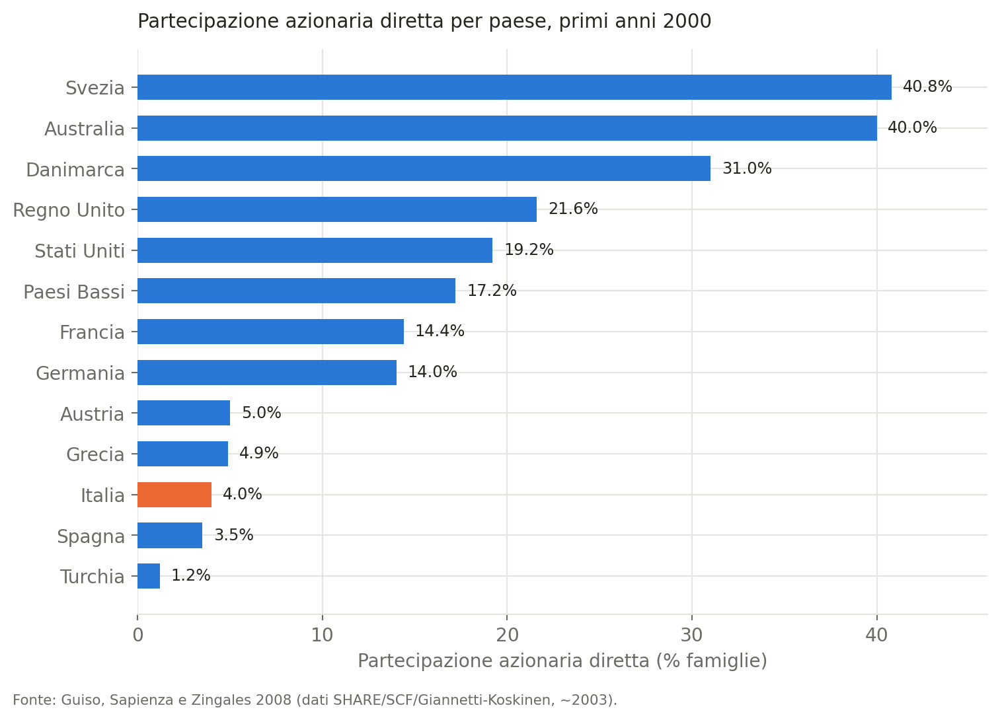
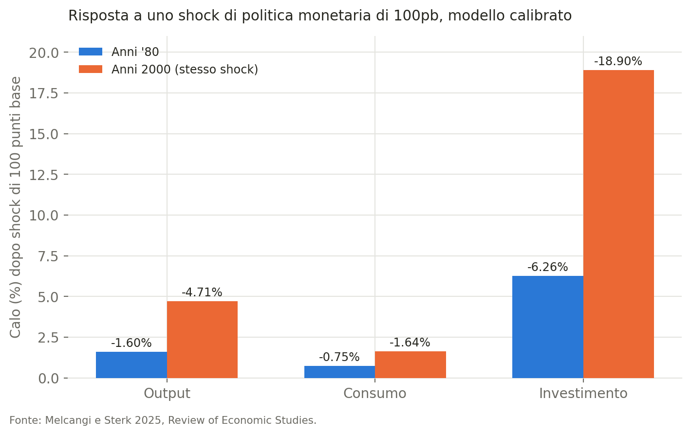
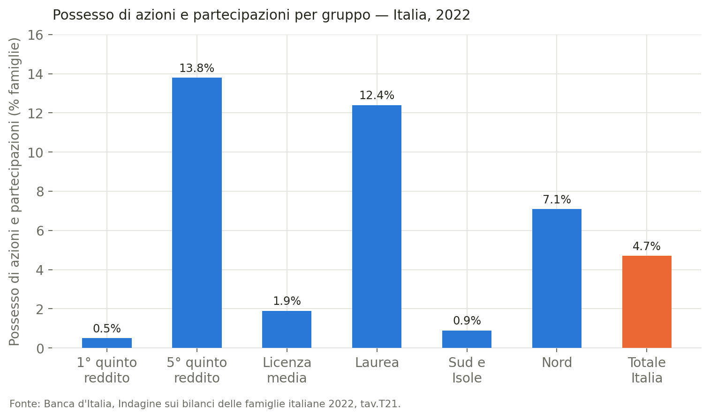

Perché le famiglie europee non investono in azioni
Determinanti, fiducia, dinamiche di ingresso/uscita e implicazioni macroeconomiche della partecipazione azionaria, con un approfondimento sul caso italiano
Famiglie
Risparmio
Mercati azionari
Meno della metà dei consumatori dell’area euro investe in azioni, direttamente o tramite fondi comuni e piani pensionistici privati, contro il 62% negli Stati Uniti.
Paolo Volterra ![]()
Sommario
Meno della metà dei consumatori dell’area euro investe in azioni, direttamente o tramite fondi comuni e piani pensionistici privati, contro il 62% negli Stati Uniti. Il documento ricostruisce lo stato dell’arte su chi partecipa al mercato azionario e perché la maggioranza non lo fa, approfondendo il ruolo della fiducia interpersonale come barriera trasversale ai livelli di reddito e la dinamica di ingresso/uscita dal mercato, sorprendentemente instabile a livello individuale pur restando stabile in aggregato. Discute inoltre perché il fenomeno non sia solo una questione di benessere individuale: la letteratura recente mostra che la quota di famiglie azioniste amplifica la trasmissione della politica monetaria e ha modellato l’andamento di lungo periodo di tasso privo di rischio ed equity premium negli Stati Uniti. Chiude con un approfondimento sul caso italiano e con una lettura delle implicazioni commerciali e di politica del credito per un intermediario bancario.
Parole chiave
partecipazione azionaria, household finance, fiducia, politica monetaria, Capital Markets Union, Italia, educazione finanziaria, cripto-attività
1 Introduzione
Le azioni battono sistematicamente le obbligazioni e i depositi nel lungo periodo, eppure la maggioranza delle famiglie non ne possiede. Questo scarto tra la teoria del portafoglio ottimo — che implica sempre una quota positiva di ricchezza investita in azioni quando il loro rendimento atteso supera quello dell’attività priva di rischio — e il comportamento osservato è noto come “puzzle della partecipazione azionaria” (Menkhoff e Westermann 2025).
Il fenomeno è particolarmente marcato in Europa. Secondo i dati più recenti della Consumer Expectations Survey (CES) della Banca Centrale Europea, la partecipazione diretta al mercato azionario nell’area euro si attesta al 20-25%, che sale a circa il 35% includendo i fondi comuni (Christelis, Georgarakos, et al. 2026) — contro il 62% dei consumatori statunitensi (Christelis, Franca, et al. 2026). Il divario non è solo una curiosità statistica: incide sulla capacità delle famiglie europee di trasformare un tasso di risparmio storicamente elevato in rendimenti di lungo periodo, ed è al centro del dibattito sulla Capital Markets Union (CMU) europea.
Questo documento ricostruisce quattro filoni di letteratura recente: chi partecipa al mercato azionario e perché la maggioranza non lo fa; quanto sia stabile nel tempo questa partecipazione a livello individuale; il ruolo specifico della fiducia come barriera trasversale ai livelli di reddito; e le implicazioni macroeconomiche della bassa partecipazione, sia per la trasmissione della politica monetaria sia per i prezzi degli asset nel lungo periodo. Chiude con un approfondimento sul caso italiano e una lettura delle implicazioni per un intermediario bancario.
2 Chi investe e chi no
2.1 Eterogeneità socio-demografica
La partecipazione azionaria nell’area euro presenta una forte eterogeneità per caratteristiche socio-demografiche (dati CES aggregati 2022-2024): è sistematicamente più alta tra i più giovani, gli uomini, chi ha istruzione terziaria, redditi elevati e alta financial literacy (Christelis, Franca, et al. 2026).
2.2 Perché non si investe: due barriere diverse per due platee diverse
Le ragioni della non-partecipazione dipendono in modo sistematico dal livello di reddito e dall’età. Tra le famiglie a reddito più basso e i più giovani, la barriera dominante è la mancanza di risorse: tra chi cita esplicitamente “non abbastanza denaro” come motivo, gli attivi liquidi mediani ammontano a soli 2.500 euro. Tra le famiglie a reddito più alto e gli anziani prevalgono invece il rischio finanziario percepito e la sfiducia nei mercati — una barriera che, come si vedrà più avanti, non si dissolve con la ricchezza (Christelis, Franca, et al. 2026; Christelis, Georgarakos, et al. 2026).
Circa un consumatore su cinque cita inoltre la mancanza di conoscenza come ostacolo. Le aspettative di rendimento contano, ma in modo diseguale: tra gli investitori attuali la correlazione tra aspettative di rendimento positivo e piani di acquisto è forte, mentre tra chi non ha mai investito è debole — segno che l’ottimismo da solo non basta a far entrare un non-investitore nel mercato (Christelis, Franca, et al. 2026).
2.3 Una tassonomia dei determinanti
I determinanti della partecipazione azionaria si possono ricondurre a quattro famiglie, derivate da un modello di portafoglio ottimo standard: costi diretti e conoscenza — che riducono il rendimento atteso netto —, volatilità dei rendimenti azionari, avversione al rischio individuale, e preferenze di rischio non-standard (Menkhoff e Westermann 2025).
Concentrandosi sulla letteratura più recente, orientata a identificare effetti causali tramite shock esogeni (eredità inattese, cambi normativi sui costi di transazione, shock alla fiducia), è possibile classificare undici determinanti come “consolidati” — ricchezza, eredità, costi di transazione, istruzione, background culturale, fiducia, aspettative individuali, incertezza macroeconomica, shock economici, avversione al rischio estrema, perdita del lavoro — e altri tredici come “plausibili ma da confermare”, tra cui reddito, capacità cognitive, età, effetti di rete tra pari e genere (Menkhoff e Westermann 2025). La misurazione stessa della financial literacy, oggi standard in tutta questa letteratura, discende dalle domande “Big Three” su interesse composto, inflazione e diversificazione del rischio introdotte in uno dei primi studi a testare la direzione causale tra conoscenza finanziaria e investimento, misurando la conoscenza prima dell’ingresso nel mercato (Rooij et al. 2011). Una revisione bibliometrica indipendente della letteratura 1998-2024 conferma che la financial literacy resta il tema dominante e ancora in espansione nel campo (Anjana 2026).
3 Una partecipazione più instabile di quanto sembri
Guardare solo alla quota aggregata di famiglie azioniste nasconde una dinamica sorprendentemente instabile a livello individuale. Nel periodo 2020-2024, circa il 10% delle famiglie che non investivano è entrato nel mercato ogni anno, mentre oltre il 20% di chi investiva è uscito — flussi che si compensano a vicenda (il bacino di non-investitori è più ampio di quello degli investitori) lasciando la quota aggregata relativamente stabile, ma nascondendo un turnover individuale elevato (Christelis, Georgarakos, et al. 2026).

Chi entra nel mercato ha sistematicamente istruzione, reddito, tolleranza al rischio e financial literacy più bassi di chi vi è già stabilmente presente — un fatto che cambia progressivamente la composizione media della base di investitori, e che ritorna, applicato ai dati statunitensi di più lungo periodo, nella discussione sui canali macroeconomici più avanti in questo documento (Christelis, Georgarakos, et al. 2026).
Le stesse dinamiche emergono, ancora più marcate, per le cripto-attività: il possesso oscilla tra l’8% e il 10% nell’area euro, concentrato tra chi è entrato durante il boom pandemico 2020-2021, tipicamente con importi modesti. L’ingresso è concentrato tra uomini giovani e tolleranti al rischio; tra i non-investitori in cripto, la barriera principale non è la volatilità né la mancanza di conoscenza, ma la sfiducia nella tecnologia sottostante, nelle piattaforme di trading o nella protezione del consumatore (Christelis, Georgarakos, et al. 2026).
4 Il ruolo della fiducia
Tra i determinanti consolidati, la fiducia merita un approfondimento specifico perché spiega una parte del puzzle che i soli costi di partecipazione non riescono a spiegare: perché anche le famiglie ricche, per le quali i costi fissi di ingresso sono trascurabili, spesso non investono in azioni. Definita come la probabilità soggettiva attribuita al rischio di essere raggirati investendo, la fiducia aumenta la probabilità di acquistare azioni del 50% della media campionaria e la quota di ricchezza investita in azioni di 3,4 punti percentuali, in un campione di quasi duemila famiglie olandesi — un effetto robusto a controlli per avversione al rischio, avversione all’ambiguità e ottimismo, che in quel campione hanno invece potere predittivo scarso (Guiso et al. 2008).
L’evidenza cross-country rafforza la lettura causale. Tra il 5% più ricco della popolazione, la fiducia media del paese spiega da sola metà della varianza nella partecipazione azionaria tra paesi. Un test indiretto particolarmente convincente confronta i paesi occupati durante la Seconda guerra mondiale — dove lo shock strutturale ha reso poco affidabile la serie storica dei rendimenti — con quelli non occupati: nei primi, passare da fiducia sotto-mediana a sopra-mediana raddoppia la partecipazione azionaria (dal 9% al 19%), mentre nei secondi la fiducia non ha alcun effetto significativo, coerentemente con l’idea che l’effetto della sfiducia si attenui quando gli investitori dispongono di una serie storica di rendimenti sufficientemente lunga (Guiso et al. 2008).

L’Italia si colloca stabilmente tra i valori più bassi del campione, comparabile solo alla Spagna — un punto su cui si torna nella sezione dedicata al caso italiano.
5 Perché conta per l’economia
Che le famiglie investano poco in azioni non è solo una questione di rendimenti individuali mancati: la letteratura più recente mostra che la quota di partecipazione azionaria plasma il modo in cui la politica monetaria si trasmette all’economia reale, e ha contribuito a determinare l’andamento di lungo periodo dei prezzi degli asset.
5.1 Il canale della trasmissione monetaria
Una dimensione di eterogeneità delle famiglie finora meno esplorata della classica distinzione tra famiglie vincolate (“hand-to-mouth”) e non vincolate — la partecipazione al mercato azionario — non si limita a cambiare il mix dei canali di trasmissione della politica monetaria: ne amplifica l’effetto aggregato, perché l’effetto diretto di ribilanciamento di portafoglio e l’effetto indiretto via reddito sono entrambi crescenti nella quota di partecipanti, e si rinforzano a vicenda invece di compensarsi come accade per il canale del consumo legato alle famiglie vincolate (Melcangi e Sterk 2025).
Il meccanismo, calibrato su dati statunitensi in un modello neo-keynesiano con eterogeneità delle famiglie, funziona così: un rialzo dei tassi induce gli investitori azionari — che hanno raggiunto un livello di sazietà nel consumo corrente e quindi non reagiscono direttamente in termini di consumo — a spostare portafoglio dalle azioni verso attività liquide. Questo riduce l’investimento aggregato e quindi il reddito, il che a sua volta induce gli stessi investitori a ridurre ulteriormente gli acquisti di azioni, generando un ciclo di retroazione che amplifica la contrazione. Il ribilanciamento diretto di portafoglio spiega circa il 40% del calo iniziale degli afflussi ai fondi azionari dopo un rialzo di 100 punti base, mentre il resto è dovuto all’effetto di reddito in equilibrio (Melcangi e Sterk 2025).
Il risultato più rilevante emerge dal confronto tra una calibrazione del modello sugli anni Ottanta e una sugli anni Duemila, quando la partecipazione azionaria statunitense era salita significativamente — un aumento concentrato nei decili di reddito mediano e appena sopra la mediana, non nel decile più alto. A parità di shock di 100 punti base, gli effetti si sono quasi triplicati:

Un risultato collaterale ma rilevante riguarda la disuguaglianza: nel modello, un irrigidimento monetario aumenta sia la disuguaglianza di consumo sia quella di ricchezza — ma solo perché esiste il canale azionario. Nei controfattuali in cui questo canale è disattivato, la disuguaglianza diminuisce invece di aumentare dopo un rialzo dei tassi (Melcangi e Sterk 2025).
5.2 Prezzi degli asset nel lungo periodo
Lo stesso fenomeno — l’aumento strutturale della partecipazione azionaria statunitense dagli anni Ottanta, da circa il 30% delle famiglie nel 1989 a stabilmente oltre il 50% dai primi anni Duemila — genera, in un modello di asset pricing con preferenze ad “abitudine esterna”, un calo del tasso privo di rischio e un ampliamento dell’equity premium, coerente con quanto osservato durante la Great Moderation (Gaudio 2025).
Il meccanismo si fonda su un’osservazione empirica: i nuovi entranti nel mercato azionario dagli anni Ottanta in poi sono, relativamente agli azionisti storici, più poveri e più avversi al rischio, pur restando famiglie relativamente benestanti in termini assoluti — lo stesso pattern di composizione dei nuovi entranti documentato sopra per i dati europei più recenti, e già alla base della concentrazione dell’aumento di partecipazione nei decili mediani osservata nel modello di trasmissione monetaria (Melcangi e Sterk 2025). Questo abbassa l’avversione al rischio media effettiva della base di investitori, con conseguenze a cascata sui prezzi degli asset. I due meccanismi, pur partendo dallo stesso fatto stilizzato, illuminano quindi due canali distinti e complementari attraverso cui la partecipazione azionaria delle famiglie plasma la macroeconomia: uno di trasmissione della politica monetaria nel breve periodo, l’altro di determinazione dei prezzi degli asset nel lungo periodo.
6 Il caso italiano
L’Italia compare sistematicamente, in ogni fonte comparativa disponibile, tra i paesi europei con la partecipazione azionaria più bassa — un tratto strutturale, non un dato isolato di un singolo anno.
Il dato più recente e disaggregato disponibile viene dalle tavole statistiche ufficiali dell’Indagine sui bilanci delle famiglie italiane della Banca d’Italia: a fine 2022, il possesso di azioni e partecipazioni riguardava il 4,7% delle famiglie (Banca d’Italia 2024) — una cifra quasi identica al 4,0% rilevato quasi vent’anni prima, nel 2003 (Guiso et al. 2008), nonostante nello stesso periodo la partecipazione sia salita sensibilmente altrove (area euro verso il 20-25%, Stati Uniti dal 24% al 34% circa nella calibrazione del modello discusso sopra).

I divari interni sono ampi quanto quelli tra paesi: il possesso di azioni sale al 7,1% al Nord contro lo 0,9% al Sud e Isole (un rapporto di 8 a 1), al 12,4% tra i laureati contro l’1,9% tra chi ha al più la licenza media, e al 13,8% nel quinto di reddito più alto contro lo 0,5% nel più basso (Banca d’Italia 2024). La concentrazione della ricchezza finanziaria complessiva è coerente con questo quadro: a fine 2022 il 10% delle famiglie più ricche deteneva quasi i due terzi delle attività finanziarie del paese, mentre il decimo più povero possedeva quasi esclusivamente depositi bancari (Banca d’Italia 2024).
Va segnalata una cautela metodologica: la voce “azioni e partecipazioni” delle statistiche ufficiali italiane include con ogni probabilità anche le partecipazioni societarie non quotate, particolarmente diffuse nel tessuto imprenditoriale italiano — un’analisi sui conti titoli presso le banche depositarie conferma che le azioni non quotate costituiscono una voce distinta e rilevante, pari a circa un quinto del patrimonio finanziario delle famiglie, separata dal complesso di titoli di debito, azioni quotate e fondi comuni che insieme valgono circa un quarto del totale (Vercelli 2024). Il confronto con le statistiche CES o SCF utilizzate altrove in questo documento, che si riferiscono unicamente all’azionariato quotato, va quindi letto con questa avvertenza.
7 Implicazioni per un intermediario bancario
Quanto ricostruito nelle sezioni precedenti è letteratura accademica e statistica ufficiale; questa sezione ne trae, in modo esplicitamente interpretativo e non presente nelle fonti citate, alcune implicazioni per un ufficio marketing o politiche del credito bancario.
Segmentazione commerciale. I profili a maggiore propensione — giovane, istruito, reddito alto — sono il target naturale per prodotti di investimento e wealth management, ma i divari più ampi segnalano soprattutto mercati sotto-serviti con margine di crescita diverso dalla pura acquisizione in aree già sature: il gap Nord-Sud italiano (8 a 1) e il gap di genere (persistente sia in Italia sia nell’area euro) individuano segmenti dove l’ostacolo non è la ricchezza disponibile ma la mancata proposizione commerciale.
La fiducia come leva di prodotto, non solo di comunicazione. L’effetto quantitativamente rilevante della fiducia nell’intermediario specifico, distinto da quella generalizzata verso i mercati, implica che una banca con una relazione di fiducia consolidata parte da un vantaggio competitivo strutturale rispetto a un exchange puro nel colmare la barriera principale della non-partecipazione — se lo sfrutta con prodotti “entry level” a basso rischio percepito piuttosto che con la sola comunicazione. La stessa logica vale per le cripto-attività, dove la barriera dichiarata dai non-investitori è la sfiducia nella piattaforma, non la volatilità: spazio per un intermediario regolamentato e fidato, se sceglie di presidiare quel mercato.
Onboarding e retention, non solo acquisizione. Un turnover annuo del 10% in ingresso e oltre il 20% in uscita implica che l’acquisizione di un nuovo investitore non basta: la fase più delicata è il primo anno, proprio perché i nuovi entranti hanno sistematicamente meno financial literacy e tolleranza al rischio degli investitori consolidati — un percorso di accompagnamento post-vendita riduce il rischio di uscita più della sola qualità del prodotto di ingresso.
Educazione finanziaria come leva di relazione, non solo di responsabilità sociale. La convergenza di tutte le fonti esaminate sull’importanza della financial literacy suggerisce che i programmi di educazione finanziaria funzionano anche come strumento di fidelizzazione e di allargamento del mercato potenziale, oltre che di posizionamento reputazionale.
Politiche del credito. La barriera della “mancanza di risorse” per i redditi bassi è spesso un problema di liquidità disponibile più che di reddito complessivo — un margine per prodotti che combinano micro-investimento automatico, ad esempio arrotondamenti sui pagamenti da conto corrente, con un buffer di liquidità dedicato, potenzialmente in grado di aprire il segmento a basso reddito storicamente escluso sia dal credito sia dagli investimenti.
8 Conclusioni
La bassa partecipazione azionaria delle famiglie europee, e italiane in particolare, riflette un insieme di vincoli che si sovrappongono in modo diverso lungo la distribuzione del reddito: mancanza di risorse per le famiglie meno abbienti, rischio percepito e sfiducia per quelle più abbienti, un deficit diffuso di conoscenza finanziaria trasversale a entrambe. La fiducia emerge come determinante particolarmente persistente, capace di spiegare la non-partecipazione anche tra le famiglie per cui i costi di ingresso sono irrilevanti; e la partecipazione, anche quando stabile in aggregato, nasconde un turnover individuale elevato che sposta nel tempo la composizione media della base di investitori. Il fenomeno non è solo una questione di benessere individuale mancato: la quota di famiglie azioniste incide sulla potenza della trasmissione della politica monetaria e ha contribuito a plasmare l’andamento di lungo periodo dei prezzi degli asset. Per l’Italia, stabilmente tra i paesi europei con la partecipazione più bassa — 4,7% nel 2022, quasi invariata rispetto al 4,0% di vent’anni prima — i divari interni per area geografica, istruzione e reddito sono ampi quanto quelli tra paesi, e disegnano al tempo stesso un problema strutturale e uno spazio di intervento, sia di policy sia commerciale.
Riferimenti
Trasparenza sull’uso dell’intelligenza artificiale
L’uso di strumenti di intelligenza artificiale generativa è dichiarato esplicitamente in quanto parte del processo di lavoro seguito nella redazione del presente documento. Tali strumenti sono stati impiegati a supporto della lettura, della sintesi, della riorganizzazione argomentativa e della revisione testuale, sempre nell’ambito di un processo pienamente controllato dall’autore.
La responsabilità per le fonti utilizzate, le analisi condotte, le verifiche effettuate, le interpretazioni proposte e le conclusioni formulate resta interamente in capo all’autore.
L’intelligenza artificiale è stata utilizzata come ambiente di supporto cognitivo ed editoriale, non come fonte primaria, autore autonomo o sostituto del giudizio critico.
9 Referenze
Anjana, S. 2026. «Drivers of Stock Market Participation: A Comprehensive Review of Key Influencing Factors». Rajagiri Management Journal 20 (1): 22–50. https://doi.org/10.1108/RAMJ-04-2025-0077.
Banca d’Italia. 2024. I bilanci delle famiglie italiane nell’anno 2022. Statistiche. Banca d’Italia. https://www.bancaditalia.it/pubblicazioni/indagine-famiglie/bil-fam2022/Fascicolo_IBF_2022.pdf.
Christelis, Dimitris, Ivan la Franca, Dimitris Georgarakos, Tullio Jappelli, Geoff Kenny, e Justus Meyer. 2026. 1518 Why Do Euro Area Consumers (Not) Invest in Stocks? SUERF Policy Brief. fasc. 1518 (luglio). https://www.suerf.org/wp-content/uploads/2026/07/SUERF-Policy-Brief-1518_Christelis-FrancaGeorgarakos-Jappelli-Kenny-Meyer.pdf.
Christelis, Dimitris, Dimitris Georgarakos, Tullio Jappelli, Geoff Kenny, e Justus Meyer. 2026. Stockholding in Europe: Evidence from the Consumer Expectations Survey. Working Paper Series No. 3239. European Central Bank. https://www.ecb.europa.eu/pub/pdf/scpwps/ecb.wp3239~efed05d5c7.en.pdf.
Gaudio, Francesco Saverio. 2025. «Stock Market Participation and Macro-Financial Trends». Journal of Monetary Economics 156. https://doi.org/10.1016/j.jmoneco.2025.103846.
Guiso, Luigi, Paola Sapienza, e Luigi Zingales. 2008. «Trusting the Stock Market». The Journal of Finance 63 (6): 2557–600. https://doi.org/10.1111/j.1540-6261.2008.01408.x.
Melcangi, Davide, e Vincent Sterk. 2025. «Stock Market Participation, Inequality, and Monetary Policy». The Review of Economic Studies 92 (4): 2656–90. https://doi.org/10.1093/restud/rdae068.
Menkhoff, Lukas, e Jannis Westermann. 2025. «Determinants of Stock Market Participation». Journal of Economic Surveys 39 (3): 953–79. https://doi.org/10.1111/joes.12634.
Rooij, Maarten van, Annamaria Lusardi, e Rob Alessie. 2011. «Financial Literacy and Stock Market Participation». Journal of Financial Economics 101 (2): 449–72. https://doi.org/10.1016/j.jfineco.2011.03.006.
Vercelli, Francesco. 2024. Financial wealth in Italy: evidence from Banking Supervisory Reports. Questioni di Economia e Finanza (Occasional Papers) No. 865. Banca d’Italia. https://www.bancaditalia.it/pubblicazioni/qef/2024-0865/index.html.